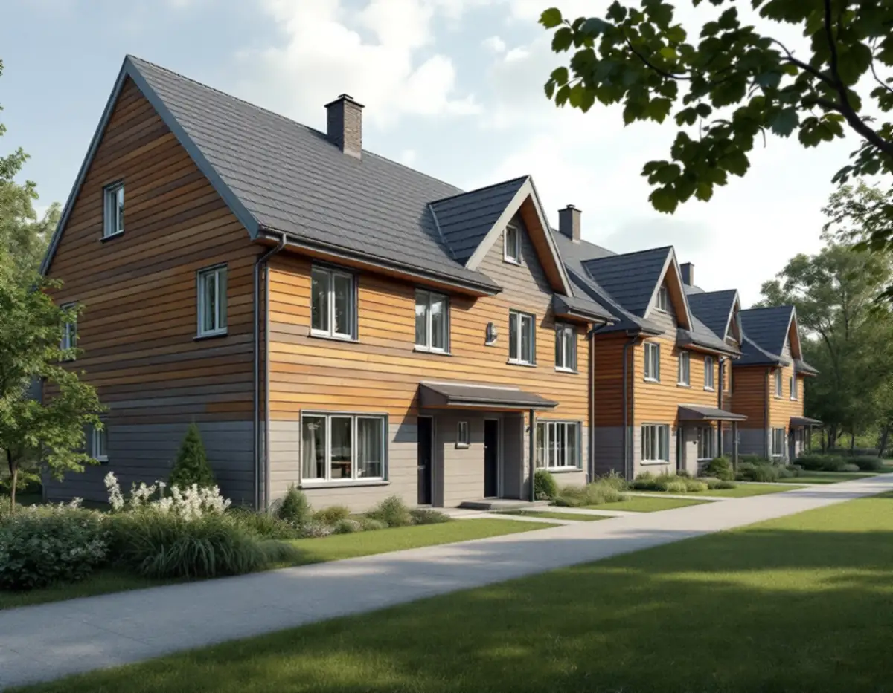
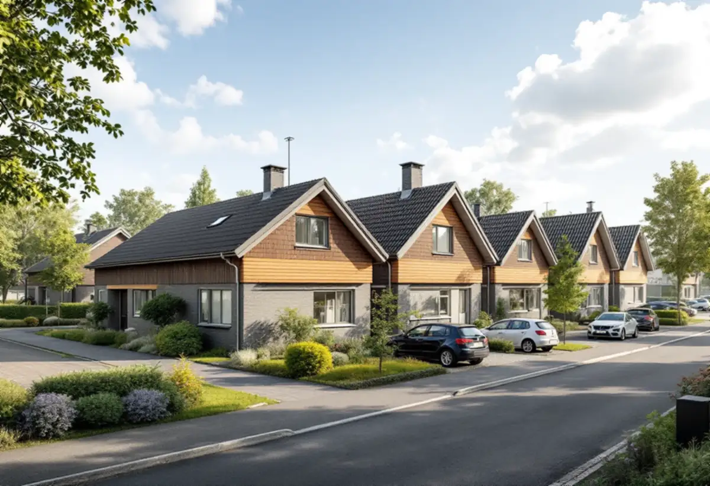
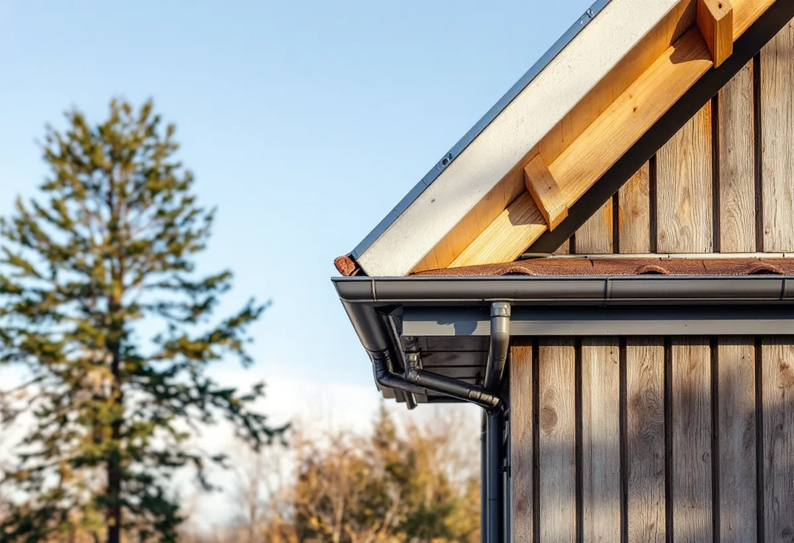

Platsbesök
Taket och grannhusens tak går vi igenom på plats.
Runt Vällingby ligger stora områden med radhus, kedjehus och villor som byggdes i grupp, och där är takets form och material en del av hela gruppens uttryck. Geal Entreprenad AB byter tak på småhus i Kälvesta, Vinsta, Råcksta och resten av Vällingby och utgår från grannhusen.

Stadens strategi för småhusområden beskriver hur andelen småhus ökade i början av 1970-talet, efter kritik mot storskalig bebyggelse, och att stora enheter med enbart småhus då bildade egna stadsdelar, som Kälvesta. Planmönstret är rationellt med tydliga grupper av hus och få matargator.
Strategin lyfter fram att den liggande träpanelen och sadeltaken ger Kälvesta en egen identitet. Enligt stadens områdesfakta för 2025 finns 1 492 småhus med äganderätt i Kälvesta, och nästan inga i annan ägarform.

För de gruppbyggda småhusen skriver strategin att områdets karaktär och värde till stor del ligger i den enhetliga gestaltningen, och att möjligheterna att förändra därför ofta är begränsade. Bland det som bedöms ha stor påverkan nämns takens form och material, färgsättning, byggnadsdelar och detaljer.
Strategin ger också rådet att ta tillvara eller återskapa karaktärsskapande material och kulörer vid renoveringar. Vid ett takbyte i en husgrupp börjar vi därför med grannarnas tak: material, kulör, takfot och nock. Lägger vi samma material igen är det underhåll, och då behålls gruppens uttryck.
Vällingby invigdes 1954 som den första tunnelbanestaden, och Råcksta och Hässelby gård planerades samtidigt. Strategin beskriver flera mycket väl gestaltade radhus- och villaområden i Vällingby, till exempel de kulturhistoriskt synnerligen värdefulla Atlantis i nordost och Omega i nordväst. Vällingby–Råcksta är riksintresse för kulturmiljövården.
Inom ett riksintresse, som visas med blå ring i Stadsmuseets karta, behöver du bygglov för åtgärder som annars är lovfria, skriver Stockholms stad. Ett takbyte till ett annat material kan alltså kräva lov där, medan samma material och utförande räknas som underhåll enligt Boverket.
I de gruppbyggda småhusområdena från 1960- och 70-talen, där strategin räknar in Kälvesta, var taken ofta platta eller svagt lutande pulpettak, men det förekommer också sadeltak. Husen står på små tomter, ofta tätt intill varandra, och nivåskillnader tas ofta upp med en souterrängvåning.
Det påverkar arbetet: ställning och materialupplag behöver planeras på liten yta, och anslutningarna mot grannens tak eller förråd måste göras tätt. Om stadsdelens tak och vanliga problem kan du läsa under takläggare i Vällingby.
Alla småhus i stadsdelsområdet är inte gruppbyggda. Nälsta räknas i stadens strategi till villastäderna, där bebyggelsen var privat organiserad och därför blev brokigare än i de planerade husgrupperna. Där står individuellt utformade hus från olika epoker sida vid sida, och taken varierar från hus till hus.
I en villastad bedömer vi därför varje tak för sig: vad som ligger där i dag, vad huset hade från början och hur det nya taket passar husets ålder och stil. Strategin ger samma råd för villastäderna som för husgrupperna, att ta tillvara karaktärsskapande material och detaljer vid renoveringar.
När det gamla taket är av ser vi underlagstäckning, läkt och råspont. Skadat trä byts, och plåt vid takfot, vindskivor och genomföringar görs om i samma arbete.
Ska flera hus i gruppen byta tak kan ställning och leveranser samordnas. Om tjänsten i stort kan du läsa under takbyte.

Taket och grannhusens tak går vi igenom på plats.
Stadsmuseets karta och detaljplanen kontrolleras.
Rivning, underlag, ytskikt och plåt står var för sig.
Vi väljer material och kulör som stämmer med husgruppen.
Gammalt tak rivs, underlaget ses över och nytt tak läggs.
Vi går igenom taket och anslutningarna med dig.
Skatteverket räknar byte och reparation av takpannor, plåttak och hängrännor på ett småhus som rotarbete. Är radhuset en bostadsrätt ger arbete på gemensamma ytor som tak inget avdrag.
Avdraget är högst 30 procent av arbetskostnaden, högst 50 000 kronor per person och år och högst 75 000 kronor tillsammans med rutavdrag. Material och resor ger inget avdrag. Geal drar avdraget direkt på fakturan.
Takets yta och lutning, materialet, hur mycket underlag som behöver bytas, åtkomsten på en liten tomt och om flera hus byts samtidigt. En överblick finns i vad kostar ett takbyte. Efter ett gratis platsbesök får du ett skriftligt kostnadsförslag.
Byte av tegel-, betong- och plåttak.
Takbyte →Takbyte, takbesiktning och plåtarbeten.
Takläggare i Vällingby →Radhusen i riksintresset Vällingby–Råcksta.
Takrenovering i Vällingby →Riksintresset och villaområdena.
Attefallshus i Vällingby →Riksintresset, radhusen och våtzonerna.
Badrumsrenovering i Vällingby →Bygga till i riksintresset.
Byggföretag i Vällingby →Puts från 1950-talet och kulör i riksintresset.
Fasadmålning i Vällingby →Tegel, puts och skivor på tunnelbanestadens hus.
Fasadrenovering i Vällingby →Radhus och kedjehus i riksintresset.
Fönsterbyte i Vällingby →Radhusens fönster.
Fönsterrenovering i Vällingby →Gamla mattor, lim och asbest.
Golvläggare i Vällingby →Lamellgolv, svikt och slitskikt.
Golvslipning i Vällingby →Kök i lägenheter och radhus.
Köksrenovering i Vällingby →Radhus och lägenheter i ABC-staden.
Målare i Vällingby →Takplåt, rännor och beslag i riksintresset.
Plåtslagare i Vällingby →Entréer, dörrar och räcken på radhusen.
Snickare i Vällingby →Väggar från 1950-talet.
Tapetsering i Vällingby →Radhusen, riksintresset och lovet.
Tillbyggnad i Vällingby →ABC-staden, eternit och föreningen.
Totalrenovering i Vällingby →